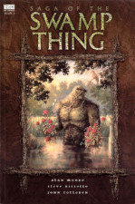

Swamp Thing, Vol 1: Saga of the Swamp Thing

by Alan Moore, Jogn Totleben, & Steve Bissette
spoilers
Moore's deconstruction of existing characters continues. Originally Swamp Thing was Alec Holland, miraculously transformed by an infusion of artificially stimulated plant matter. When Alan Moore takes over the writing, Swamp Thing's ostracization and existential dread is compounded by the discovery that this origins story has been a delusion all along. Alec Holland was killed outright in the accident, and an accumulation of plant matter grew around his decaying form, integrating the physical remains of his memories into a creature that yearned to recapture its human form, but was never human in the first place.